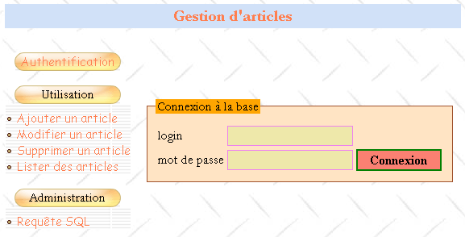
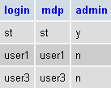
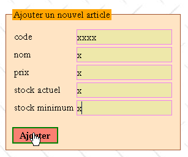
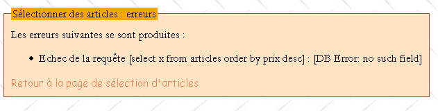
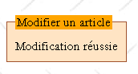
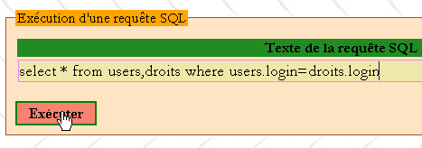

7. Étude de cas : gestion d'une base d'articles sur le web
Les codes de cette étude de cas sont disponibles |ICI|.
Objectifs :
- écrire une classe de gestion d'une base de données d'articles
- écrire une application web s'appuyant sur cette classe
- introduire les feuilles de style
- proposer un début de méthodologie de développement pour des applications web simples
- introduire javascript dans le navigateur client
Crédits : L'essence de cette étude de cas a été trouvée dans le livre "Les cahiers du programmeur - PHP/MySQL" de Jean-Philippe Leboeuf aux éditions Eyrolles.
7.1. Introduction
Un commerçant désire gérer les articles qu'il vend en magasin. Il a déjà chez lui une application ACCESS qui fait ce travail mais il est tenté par l'aventure du web. Il a un compte chez un fournisseur d'accès internet, fournisseur autorisant ses clients à installer des scripts PHP dans leurs dossiers personnels. Ceci leur permet de créer des sites web dynamiques. Par ailleurs, ces mêmes clients disposent d'un compte MySQL leur permettant de créer des tables pouvant servir des données à leurs scripts PHP. Ainsi le commerçant a un compte MySQL ayant pour login admarticles et mot de passe mdparticles. Il possède une base dbarticles sur laquelle il a tous les droits. Notre commerçant a donc les éléments suffisants pour mettre sa gestion d'articles sur le web. Aidé par vous qui avez des compétences dans le développement Web, il se lance dans l'aventure.
7.2. La base des données
Notre commerçant fait la maquette suivante de l'interface web d'accueil qu'il souhaiterait :

Il y aurait deux sortes d'utilisateurs :
- des administrateurs qui pourraient tout faire sur la table des articles (ajouter, modifier, supprimer, consulter, ...). Ceux-là pourront utiliser tous les éléments du menu ci-dessus. En particulier, ils pourront émettre toute requête SQL via l'option [Requête SQL].
- les utilisateurs normaux (pas administrateurs) qui auraient des droits restreints : droits d'ajouter, de modifier, de supprimer, de consulter. Ils peuvent n'avoir que certains de ces droits, le seul droit de consultation par exemple.
Du fait qu'il y a divers types d'utilisateurs de la base n'ayant pas les mêmes droits, il y a nécessité d'une authentification. C'est pourquoi la page d'accueil commence avec celle-ci. Pour savoir qui est qui, et qui a le droit de faire quoi, deux tables USERS et DROITS seront utilisées. La table USERS aurait la structure suivante :
 |
|
Le contenu de la table pourrait être le suivant :

La table DROITS précise les droits qu'ont les utilisateurs non administrateurs présents dans la table USERS. Sa structure est la suivante :
 |
|
Le contenu de la table pourrait être le suivant :

Remarques :
- Un utilisateur U se trouvant dans la table USERS et absent de la table DROITS n'a aucun droit.
- Dans notre exemple, les utilisateurs n'auront accès qu'à une seule table, la table ARTICLES. Mais notre commerçant, prévoyant, a néanmoins ajouté le champ table à la structure de la table DROITS afin de se donner la possibilité d'ajouter ultérieurement de nouvelles tables à son application.
- Pourquoi gérer des droits dans nos propres tables alors qu'on fait l'hypothèse qu'on utilisera une base MySQL capable elle-même (et mieux que nous) de gérer ces droits dans ses propres tables ? Simplement parce que notre commerçant n'a pas les droits d'administration sur la base MySQL qui lui permettraient de créer des utilisateurs et de leur donner des droits. N'oublions pas en effet que la base MySQL est hébergée chez un fournisseur d'accès et que le commerçant n'est qu'un simple utilisateur de celle-ci sans aucun droit d'administration (heureusement). Il possède cependant tous les droits sur une base appelée dbarticles à laquelle il accède pour le moment avec le login admarticles et le mot de passe mdparticles. C'est dans cette base que prennent place toutes les tables de l'application.
La table ARTICLES rassemble les informations sur les articles vendus par le commerçant. Sa structure est la suivante :
 |
|
Son contenu utilisé dans un premier temps comme test pourrait être le suivant :

7.3. Les contraintes du projet
Le commerçant migre ici une application ACCESS locale en une application Web. Il ne sait ce que deviendra celle-ci et comment elle évoluera. Il voudrait cependant que la nouvelle application soit facile à utiliser et évolutive. C'est pour cette raison que son conseiller informatique a imaginé pour lui, lors de la conception des tables, qu'il pouvait y avoir :
- divers utilisateurs avec différents droits : cela permettra au commerçant de déléguer certaines tâches à d'autres personnes sans pour autant leur donner des droits d'administration
- dans le futur d'autres tables que la table ARTICLES
Le même conseiller fait d'autres propositions :
- il sait que dans le développement logiciel, il faut séparer nettement les couches présentation et les couches traitement. L'architecture d'une application web est souvent la suivante :
 |
L'interface utilisateur est ici un navigateur web mais cela pourrait être également une application autonome qui via le réseau enverrait des requêtes HTTP au service web et mettrait en forme les résultats que celui-ci lui envoie. La logique applicative est constituée des scripts traitant les demandes de l'utilisateur, ici des scripts PHP. La source de données est souvent une base de données mais cela peut être aussi un annuaire LDAP ou un service web distant. Le développeur a intérêt à maintenir une grande indépendance entre ces trois entités afin que si l'une d'elles change, les deux autres n'aient pas à changer ou peu. Le conseiller informatique du commerçant fait alors les propositions suivantes :
- On mettra la logique métier de l'application dans une classe PHP. Ainsi le bloc [Logique applicative] ci-dessus sera constitué des éléments suivants :
 |
Dans le bloc [Logique Applicative], on pourra distinguer
- le bloc [IE=Interface d'Entrée] qui est la porte d'entrée de l'application. Elle est la même quelque soit le type de client.
- le bloc [Classes métier] qui regroupe des classes nécessaires à la logique de l'application. Elles sont indépendantes du client.
- le bloc des générateurs des pages réponse [IS1 IS2 ... IS=Interface de Sortie]. Chaque générateur est chargé de mettre en forme les résultats fournis par la logique applicative pour un type de client donné : code HTML pour un navigateur ou un téléphone WAP, code XML pour une application autonome, ...
Ce modèle assure une bonne indépendance vis à vis des clients. Que le client change ou qu'on veuille faire évoluer sa façon de présenter les résultats, ce sont les générateurs de sortie [IS] qu'il faudra créer ou adapter.
- Dans une application web, l'indépendance entre la couche présentation et la couche traitement peut être améliorée par l'utilisation de feuilles de style. Celles-ci gouvernent la présentation d'une page Web au sein d'un navigateur. Pour changer cette présentation, il suffit de changer la feuille de style associée. Il n'y a pas à toucher à la logique de traitement. On utilisera donc ici une feuille de style.
- Dans le diagramme ci-dessus, c'est la classe métier qui fera l'interface avec la source de données. Par hypothèse, cette source est ici une base MySQL. Afin de permettre une évolution vers une autre base de données, on utilisera la bibliothèque PEAR qui offre des classes d'accès aux bases de données indépendantes du type réel de celles-ci. Ainsi si notre commerçant s'enrichit au point de pouvoir installer un serveur web IIS de Microsoft dans son entreprise, il pourra remplacer la base MySQL par SQL Server sans avoir (ou très peu) à changer la classe métier.
7.4. La classe articles
La classe articles pourrait être définie de la façon suivante :
<?php
// classe articles travaillant sur une base d'articles composée des tables suivantes
// articles : (code, nom, prix, stockActuel, stockMinimum)
// users : (login, mdp, admin)
// droits : (login, table, ajouter, modifier, supprimer, consulter)
// c'est l'utilisateur de la classe qui doit fournir le login/mdp qui permet de faire toute opération sur la base
// il a donc déjà tous les droits sur la base. Ceci implique qu'il n'y a pas à prendre
// de précautions de sécurité particulières ici
// bibliothèques
require_once 'DB.php';
class articles{
// attributs
var $sDSN; // la chaîne de connexion
var $sDatabase; // le nom de la base
var $oDB; // connexion à la base
var $aErreurs; // liste d'erreurs
var $oRésultats; // résultat d'une requête select
var $connecté; // booléen qui indique si on est connecté ou non à la base
var $sQuery; // la dernière requête exécutée
var $sUser; // identité de l'utilisateur de la connexion
var $bAdmin; // à vrai si l'utilisateur est administrateur
var $dDroits; // le dictionnaire de ses droits table ->> array(consulter,ajouter,supprimer,modifier)
// constructeur
function articles($dDSN,$sUser,$sMdp){
// $dDSN : dictionnaire définissant la liaison à établir
// $dDSN['sgbd'] : le type du SGBD auquel il faut se connecter
// $dDSN['host'] : le nom de la machine hôte qui l'héberge
// $dDSN['database'] : le nom de la base à laquelle il faut se connecter
// $dDSN['admin'] : le login du propiétaire de la base à laquelle il faut se connecter
// $dDSN['mdpadmin'] : son mot de passe
// $sUser : le login de l'utilisateur qui veut exploiter la base des articles
// $sMdp : son mot de passe
// crée dans $oDB une connexion à la base définie par $dDSN sous l'identité de $dDSN['admin']
// si la connexion réussit et que l'utilisateur $sUser est authentifié
// charge les droits dans $bAdmin et $dDroits les droits de l'utilisateur $sUser
// met dans $sDSN la chaîne de connexion à la base
// met dans $sDataBase le nom de la base à laquelle on se connecte
// met $connecté à vrai
// si la connexion échoue ou si l'utilisateur $sUser n'est pas identifié correctement
// met les msg d'erreurs adéquats dans la liste $aErreurs
// ferme la connexion si besoin est
// met $connecté à faux
...
}//constructeur
// ------------------------------------------------------------------
function connect(){
// (re)connexion à la base
...
}//connect
// ------------------------------------------------------------------
function disconnect(){
// on ferme la connexion à la base $sDSN
...
}//disconnect
// -------------------------------------------------------------------
function execute($sQuery,$bAdmin){
// $sQuery : requête à exécuter
// $bAdmin : vrai si demande d'exécution en tant qu'administrateur
...
}//execute
// --------------------------------------------------------------------------
function addArticle($dArticle){
// ajoute un article $dArticle (code, nom, prix, stockActuel, stockMinimum) à la table des articles
...
}//add
// ----------------------------------------------------------------------
function modifyArticle($dArticle){
// modifie un article $dArticle (code, nom, prix, stockActuel, stockMinimum) de la table des articles
...
}//update
// ----------------------------------------------------------------------
function deleteArticle($sCode){
// supprime un article de la table des articles
// dont on a le code $sCode
...
}//delete
// ----------------------------------------------------------------------
function vérifierArticle(&$dArticle){
// vérifie la validité d'un article $dArticle (code, nom, prix, stockActuel, stockMinimum)
...
}//vérifier
// --------------------------------------------------------------------------
function selectArticles($dQuery){
// exécute une requête select la table des articles
// celle-ci a trois composantes
// liste des colonnes dans $dQuery['colonnes']
// filtrage dans $dQuery['where']
// ordre de présentation dans $dQuery['orderby']
...
}//selectArticles
// --------------------------------
function existeArticle($sCode){
// rend TRUE si l'article de code $sCode existe dans la table des articles
...
}//existeArticle
// --------------------------------------
function existeUser($sUser,$sMdp){
// vérification de l'existence de l'utilisateur $sUser ayant le mot de passe $sMdp
// rend (int $iErreur, string $sAdmin, hashtable $dDroits)
// $iErreur = -1 pour toute erreur d'exploitation de la base - la liste $aErreurs est alors renseignée
// $iErreur = 1 si l'utilisateur n'est pas trouvé (absent ou pas bon mot de passe)
// $iErreur = 2 si l'utilisateur existe mais n'a aucun droit dans la table des droits
// $iErreur = 3 si l'utilisateur existe et est administrateur
// $iErreur = 0 si l'utilisateur existe et n'est pas administrateur
// $sAdmin="y" ssi l'utilisateur existe et est administrateur ($iErreur==3), sinon il est égal à la chaîne vide
// $dDroits est le dictionnaire des droits de l'utilisateur s'il n'est pas administrateur ($iErreur==0)
// sinon c'est un tableau vide
// les clés du dictionnaire sont les tables sur lesquelles l'utilisateur a des droits
// la valeur associée à cette table est à son tour un dictionnaire où les clés sont les droits
// (consulter, ajouter, modifier, supprimer) et les valeurs les chaînes 'y' (yes) ou 'n' (no) selon les cas
...
}//existeUser
// --------------------------------------
function getCodes(){
// rend le tableau des codes
....
}//getCodes
}//classe
?>
Commentaires
- la classe articles utilise la bibliothèque PEAR::DB pour ses accès à la base de données d'où la commande
Cette inclusion suppose que le script DB.php soit dans l'un des répertoires de l'option include_path du fichier de configuration de PHP.
- le constructeur a besoin de savoir à quelle base on se connecte et sous quelle identité. Ces informations lui sont données dans le dictionnaire $dDSN. Rappelons que l'hypothèse de départ était que la base s'appelait dbarticles et qu'elle appartenait à un utilisateur appelé admarticles ayant le mot de passe mdparticles. Rappelons aussi que cette application autorise plusieurs utilisateurs ayant différents droits. Il y a là une ambiguïté à lever. La connexion est bien ouverte sous l'identité de admarticles et au final c'est sous cette identité que seront faites toutes les opérations sur la base dbarticles puisque c'est le seul nom que connaît le SGBD MySQL qui ait les droits suffisants pour gérer la base dbarticles. Pour "simuler" l'existence de différents utilisateurs, on fera travailler l'utilisateur admarticles avec les droits de l'utilisateur dont le login ($sUser) et le mot de passe ($sMdp) sont passés en paramètres au constructeur. Ainsi, avant de faire une opération sur la base des articles, on vérifiera que l'utilisateur ($sUser, $sMdp) a bien les droits de la faire. Si oui, c'est l'utilisateur admarticles qui la fera pour lui.
- le login et le mot de passe de l'administrateur de la base des articles doivent être passés au constructeur. C'est une saine précaution. Si on inscrivait en "dur" dans le code de la classe ces deux informations, tout utilisateur de la classe pourrait se faire passer aisément pour administrateur de la base des articles. En effet, une classe PHP n'est pas protégée. Aussi l'attribut $bAdmin de la classe qui indique si l'utilisateur ($sUser, $sMdp) pour lequel on travaille est administrateur ou non pourrait très bien être positionné directement de l'extérieur comme dans l'exemple suivant :
$oArticles=new articles($dDSN,$sUser,$sMdp)
// ici $sUser a été reconnu comme un utilisateur non administrateur de la base
$oArticle->bAdmin=TRUE;
// maintenant $sUser est devenu administrateur
PHP n'est pas JAVA ou C# et une classe PHP n'est qu'une structure de données un peu plus évoluée qu'un dictionnaire mais qui n'offre pas la sécurité d'une vraie classe où l'attribut bAdmin aurait été déclaré privé ou protégé rendant impossible sa modification de l'extérieur. Parce que l'utilisateur de la classe doit connaître le login et le mot de passe de l'administrateur de la base des articles, seul ce dernier peut utiliser la classe. L'opération précédente ne présente donc plus aucun intérêt pour lui. La classe est là uniquement pour lui offrir des facilités de développement. Une conséquence importante est qu'il n'y a pas lieu de prendre des précautions de sécurité. Encore une fois, celui qui utilise la classe articles est nécessairement administrateur de la base des articles.
- la classe gère les erreurs de connexion à la base ou tout autre erreur de façon unique en remplissant l'attribut $aErreurs avec le ou des messages d'erreurs. Après chaque opération, l'utilisateur de la classe doit donc vérifier cette liste.
- Les méthodes addArticle, updateArticle, deleteArticle, selectArticles, execute découlent directement de la maquette de l'interface web présentée précédemment. Elles correspondent en effet aux options du menu proposé. Les méthodes addArticle et modifyArticle s'appuient sur la méthode vérifierArticle pour vérifier que l'article qui va être ajouté ou être modifié a des données correctes. Toujours dans le même esprit, la méthode existeArticle permet de vérifier qu'on ne s'apprête pas à ajouter un article qui existe déjà. On pourrait se passer de cette méthode si on utilise une table d'articles où le code est clé primaire. C'est alors le SGBD lui-même qui signalera l'échec de l'ajout pour cause de doublon. Il le dira probablement avec un message d'erreur peu lisible et en anglais.
- Un article à modifier ou à supprimer sera désigné par son code qui est unique. La méthode getCodes permet d'obtenir tous ces codes.
- La méthode disconnect ferme la connexion à la base, connexion ouverte lors de la construction de l'objet. On ne voit pas l'intérêt ici de la méthode connect qui va recréer une connexion avec la base. Cela va permettre d'ouvrir et fermer cette connexion à volonté avec un même objet. L'intérêt n'apparaît qu'en conjonction avec l'application web. Celle-ci va créer un objet articles qu'elle va mémoriser dans une session. Si celle-ci va être capable de conserver la plupart des attributs de l'objet au fil des échanges client-serveur successifs, elle n'est pas capable cependant de garder l'attribut représentant la connexion ouverte. Celle-ci devra donc être réouverte à chaque nouvel échange client-serveur. On demandera une connexion persistante afin que la connexion ouverte soit stockée dans un pool de connexions et reste ouverte de façon permanente. Ainsi lorsque le script demandera une nouvelle connexion, celle-ci sera récupérée dans le pool de connexions. On arrive donc au même résultat que si la session avait pu mémoriser la connexion ouverte.
- la méthode existeUser permet au constructeur de savoir si l'utilisateur $sUser identifié par le mot de passe $sMdp existe bien. Si oui, la méthode permet de savoir s'il est administrateur ou non (indiqué dans la table USERS) et mémorise cette information dans l'attribut $bAdmin. S'il n'est pas administrateur, la méthode va récupérer ses droits dans la table DROITS et les met dans l'attribut $dDroits qui est un dictionnaire à double indexation : $dDroits[$table][$droit] vaut 'y' si l'utilisateur $sUser a le droit $droit sur la table $table et vaut 'n' sinon.
Écrire la classe articles. Les accès à la base de données seront faits à l'aide de la bibliothèque PEAR::DB qui permet de s'affranchir du type exact de la base.
7.5. La structure de l'application WEB
Maintenant que nous avons la classe "métier" de gestion de la base d'articles, nous pouvons utiliser celle-ci dans différents environnements. Il est proposé ici de l'utiliser dans une application web. Découvrons celle-ci au-travers de ces différentes pages :
7.5.1. La page type de l'application
Revenons sur la page d'accueil déjà présentée :
1234
Toutes les pages de l'application auront la structure ci-dessus, celle d'un tableau à deux lignes et trois colonnes comprenant quatre zones :
- la zone 1 forme la première ligne du tableau. Elle est réservée au titre accompagné éventuellement d'une image. Les trois colonnes de la ligne sont ici fusionnées.
- la seconde ligne a trois zones, une zone par colonne :
- la zone 2 contient les options du menu. Elle contient à son tour un tableau à une colonne et plusieurs lignes. Les options du menu sont placées dans les lignes du tableau.
- la zone 3 est vide et ne sert qu'à séparer les zones 2 et 4. On aurait pu procéder différemment pour réaliser cette séparation.
- la zone 4 est celle qui contient la partie dynamique de la page. C'est cette partie qui change d'une action à l'autre, les autres restant identiques.
Le script PHP générant cette page type s'appellera main.php et pourrait être le suivant :
<html>
<head>
<title>Gestion d'articles</title>
<link type="text/css" href="<?php echo $dConfig['urlPageStyle'] ?>" rel="stylesheet" />
</head>
<body background="<?php echo $dConfig['urlBackGround'] ?>">
<table>
<tr height="60">
<td colspan="3" align="left" valign="top" >
<h1><?php echo $main["title"] ?></h1>
</td>
</tr>
<tr>
<td>
<table>
<tr>
<td class="menutitle" >
<a href="<?php echo $main["liens"]["login"] ?>" ?>Authentification</a>
</td>
</tr>
<tr>
<td><br /></td>
</tr>
<tr>
<td class="menutitle" >
Utilisation
</td>
</tr>
<tr height="10"></tr>
<tr>
<td class="menublock" >
<img alt="-" src="../images/radio.gif" />
<a href="<?php echo $main["liens"]["addArticle"] ?>" ?>
Ajouter un article
</a>
</td>
</tr>
<tr>
<td class="menublock" >
<img alt="-" src="../images/radio.gif" />
<a href="<?php echo $main["liens"]["updateArticle"] ?>">
Modifier un article
</a>
</td>
</tr>
<td class="menublock" >
<img alt="-" src="../images/radio.gif" />
<a href="<?php echo $main["liens"]["deleteArticle"] ?>">
Supprimer un article
</a>
</td>
</tr>
<tr>
<td class="menublock" >
<img alt="-" src="../images/radio.gif" />
<a href="<?php echo $main["liens"]["selectArticle"] ?>">
Lister des articles
</a>
</td>
</tr>
<tr>
<td><br /></td>
</tr>
<tr>
<td class="menutitle" >
Administration
</td>
</tr>
<tr height="10"></tr>
<tr>
<td class="menublock" >
<img alt="-" src="../images/radio.gif" />
<a href="<?php echo $main["liens"]["sql"] ?>" >
Requête SQL
</a>
</td>
</tr>
</table>
</td>
<td>
<img alt="/" src="../images/pix.gif" width="10" height="1" />
</td>
<td>
<fieldset>
<legend><?php echo $main["légende"] ?></legend>
<?php
include $main["contenu"];
?>
</fieldset>
</td>
</tr>
</table>
</body>
</html>
Les zones paramétrées de la page ont été mises en relief dans le listing ci-dessus. La page type est paramétrée de plusieurs façons :
- par un dictionnaire $main ayant les clés suivantes :
- title : titre à mettre en zone 1 de la page
- liens : dictionnaires des liens à générer dans la colonne du menu. Ces liens sont associés aux options du menu de la zone 2
- contenu : url de la page à afficher dans la zone 4
- par un dictionnaire $dConfig rassemblant des informations tirées d'un fichier de configuration de l'application appelé config.php
- par des classes faisant partie de la feuille de style utilisée par la page :
La page utilise ici les classes de style suivantes :
- menutitle : pour une option principale du menu
- menublock : pour une option secondaire du menu
Changer l'un des paramètres change l'aspect de la page. Ainsi changer $main['title'] changera le titre de la zone 1.
7.5.2. Le traitement type d'une demande d'un client
Le client interagit avec l'application grâce aux liens de la zone 2 de la page type. Ces liens seront du type suivant :
désigne l'action en cours parmi les suivantes : authentifierauthentification du clientselectArticlessélection d'articles (consultation)updateArticlemodification d'un articledeleteArticlesuppression d'un articlesqlémission d'une requête SQL quelconque (administrateur) | |
une action peut se faire en plusieurs étapes - désigne l'étape en cours | |
jeton de session lorsque celle-ci a démarré - permet au serveur de récupérer des informations stockées dans la session lors des précédents échanges |
De même l'attribut action dans les formulaires aura la même forme. Par exemple, dans la page d'accueil il y a un formulaire de login dans la zone 4. La balise HTML de ce formulaire est définie comme suit :
Le traitement de la demande du client est accomplie par le script principal de l'application appelé apparticles.php. Son travail est de construire la réponse au client. Il procèdera toujours de la même façon :
- grâce au nom de l'action et à la phase en cours, il déléguera la demande à une fonction spécialisée. Celle-ci traitera la demande et génèrera la page réponse adéquate. Pour chaque demande du client, il peut y avoir plusieurs pages réponse possibles : page1, page2, ..., pagen. Ces pages contiennent des informations qui doivent être calculées par la fonction. Ce sont donc des pages paramétrées. Elles seront générées par des scripts page1.php, page2.php, ..., pagen.php.
- par souci d'homogénéité, les parties variables des pages à afficher dans la zone 4 de la page type seront elles-aussi placées dans le dictionnaire $main.
Supposons qu'en réponse à une demande, le serveur doive envoyer la page pagex.php au client. Il procèdera de la façon suivante :
- il placera dans le dictionnaire $main les valeurs nécessaires à la page pagex.php
- il mettra dans $main['contenu'] qui désigne l'URL de la page à afficher en zone 4 de la page type, l'URL de pagex.php
- il demandera l'affichage de le page type avec l'instruction
La page type sera alors affichée avec dans la zone 4 le code du script pagex.php qui sera évalué pour générer le contenu de la zone 4. On se rappellera que celle-ci est une simple cellule d'un tableau. Il ne faut donc pas que le code HTML généré par pagex.php commence par les balises <HTML>, <HEAD>, <BODY>, .... Celles-ci ont déja été émises au début de la page type. Voici par exemple à quoi pourrait ressembler le script login.php qui génère la zone 4 de la page d'accueil :
<form name="frmLogin" method="post" action="<?php echo $main["post"] ?>">
<table>
<tr>
<td>login</td>
<td><input type="text" value="<?php echo $main["login"] ?>" name="txtLogin" class="text"></td>
</tr>
<tr>
<td>mot de passe</td>
<td><input type="password" value="" name="txtMdp" class="text"></td>
<td><input type="submit" value="Connexion" class="submit"></td>
</tr>
</table>
</form>
On voit que la page :
- est réduite à un formulaire
- est paramétrée à la fois par le dictionnaire $main et la feuille de style.
7.5.3. Le fichier de configuration
On a toujours intérêt à paramétrer le plus possible les applications afin d'éviter d'aller dans le code simplement parce qu'on a décidé par exemple de changer le chemin d'un script ou d'une image. L'application principale apparticles.php chargera donc un fichier de configuration config.php à son démarrage :
On mettra dans ce fichier, des directives de configuration destinées à PHP et des initialisations de variables globales :
<?php
// configuration de php
ini_set("register_globals","off");
ini_set("display_errors","off");
ini_set("expose_php","off");
ini_set("session.use_cookies","0"); // pas de cookies
// configuration base articles
$dConfig["DSN"]=array(
"sgbd"=>"mysql",
"admin"=>"admarticles",
"mdpadmin"=>"mdparticles",
"host"=>"localhost",
"database"=>"dbarticles"
);
// url des pages
$dConfig['urlBackGround']="../images/standard.jpg";
$dConfig["urlPageStyle"]="mystyle.css";
$dConfig["urlAppArticles"]="apparticles.php";
$dConfig["urlPageMain"]="main.php";
$dConfig["urlPageLogin"]="login.php";
$dConfig["urlPageErreurs"]="erreurs.php";
$dConfig["urlPageInfos"]="infos.php";
$dConfig["urlPageAddArticle"]="addarticle.php";
$dConfig["urlPageUpdateArticle1"]="updatearticle1.php";
$dConfig["urlPageUpdateArticle2"]="updatearticle2.php";
$dConfig["urlPageDeleteArticle1"]="deletearticle1.php";
$dConfig["urlPageDeleteArticle2"]="deletearticle2.php";
$dConfig["urlPageSelectArticle1"]="selectarticle1.php";
$dConfig["urlPageSelectArticle2"]="selectarticle2.php";
$dConfig["urlPageSQL1"]="sql1.php";
$dConfig["urlPageSQL2"]="sql2.php";
$dConfig["urlPageSQL3"]="sql3.php";
// liens de la page principale
$main["liens"]["login"]="$sUrlAppArticles?action=authentifier&phase=0";
$main["liens"]["addArticle"]="$sUrlAppArticles?action=addArticle&phase=0";
$main["liens"]["updateArticle"]="$sUrlAppArticles?action=updateArticle&phase=0";
$main["liens"]["deleteArticle"]="$sUrlAppArticles?action=deleteArticle&phase=0";
$main["liens"]["selectArticle"]="$sUrlAppArticles?action=selectArticle&phase=0";
$main["liens"]["sql"]="$sUrlAppArticles?action=sql&phase=0";
// on mémorise $main dans la configuration
$dConfig["main"]=$main;
?>
7.5.4. La feuille de style associée à la page type
Nous avons vu que la réponse du serveur avait un format unique celui de main.php. On aura pu remarquer que ce script produit une page brute dépourvue d'effets de présentation. C'est une bonne chose pour plusieurs raisons :
- le développeur n'a pas à se soucier de la présentation graphique de la page qu'il crée. Il n'a en effet pas nécessairement les compétences pour créer des pages graphiques attractives. Il peut ici se concentrer entièrement sur le code.
- la maintenance des scripts est facilitée. Si ceux-ci comportaient des attributs de présentation, ni la structure du code, ni celle de la présentation n'apparaîtraient clairement. L'aspect graphique des feuilles est souvent délégué à un graphiste. Celui-ci n'aimerait probablement pas à devoir chercher dans un script qu'il ne comprend pas, où sont les attributs de présentation qu'il doit modifier.
Il faut pourtant bien se soucier de l'aspect graphique des pages. En effet, c'est cela qui attire les internautes vers un site. Ici, la présentation est déléguée à une feuille de style. La page main.php indique dans son code la feuille de style à utiliser pour l'afficher :
<head>
<title>Gestion d'articles</title>
<link type="text/css" href="<?php echo $dConfig['urlPageStyle'] ?>" rel="stylesheet" />
</head>
La feuille de style utilisée dans ce document est la suivante :
BODY {
background : url(../images/standard.jpg);
border : 2px none #FFDAB9;
font-family : Garamond;
font-size : 16px;
margin-left : 0px;
padding-left : 20px;
}
INPUT {
background : #EEE8AA;
border : 1px solid #EE82EE;
font-family : Garamond;
font-size : 18px;
}
INPUT.submit{
font-family : "Times New Roman";
font-size : 16px;
background : #FA8072;
border : 2px double Green;
font-weight : bold;
text-align : center;
vertical-align : middle;
cursor : pointer;
}
TD.menutitle{
background-image : url(../images/menugelgd.gif);
height : 23px;
text-align : center;
vertical-align : middle;
background : url(../images/menugelgd.gif) no-repeat center;
}
TD.menublock{
background : url(../images/bandegrismenugd.gif) repeat-x;
text-align : left;
vertical-align : middle;
}
A {
font-family : "Comic Sans MS";
color : #FF7F50;
font-size : 15px;
text-decoration : none;
}
A:HOVER {
background : #FFA07A;
color : Red;
}
FIELDSET {
border : 1px solid #A0522D;
background : #FFE4C4;
margin : 10px 10px 10px 10px;
padding-left : 10px;
padding-right : 10px;
padding-bottom : 10px;
}
LEGEND{
background : #FFA500;
}
TH {
background : #228B22;
text-align : center;
vertical-align : middle;
}
TD.libellé{
border : 1px solid #008B8B;
color : #339966;
}
H1 {
font : bold 20px/30px Garamond;
color : #FF7F50;
background : #D1E1F8;
background-attachment : fixed;
text-align : center;
vertical-align : middle;
font-family : Garamond;
}
SELECT.TEXT {
background : #6495ED;
text-align : center;
color : Aqua;
}
Nous n'entrerons pas dans les détails de cette feuille de style. Nous l'accepterons telle-quelle. Un peu plus loin nous verrons comment la construire et la modifier. Il existe des logiciels pour cela. Néanmoins indiquons le rôle des attributs de présentation utilisés dans la feuille :
Attribut : | régit la présentation de la balise HTML : |
<BODY> | |
<H1> (Header1) | |
<A> (Anchor) | |
fixe les attributs de présentation de l'ancre lorsque l'utilisateur passe la souris dessus | |
<FIELDSET> - cette balise n'est pas reconnue par tous les navigateurs | |
<LEGEND> - cette balise n'est pas reconnue par tous les navigateurs | |
<INPUT> | |
<INPUT class="TEXT"> | |
<INPUT class="SUBMIT"> | |
<TH> (Table Header) | |
<TD class="menutitle"> (Table Data) | |
<TD class="menublock"> | |
<TD class="libellé"> |
Voyons sur un exemple comment peuvent être écrites ces règles de présentation. Dans cet exemple, nous utiliserons le logiciel TopStyle Lite disponible gratuitement à l'URL http://www.bradsoft.com. Une fois chargée la feuille de style, on a une fenêtre à trois zones :
- une zone d'édition de texte. Les attributs de présentation peuvent être définis à la main à condition de connaître les règles d'écriture des feuilles de style qui suivent une norme appelée CSS (Cascading Style Sheets).
- la zone 2 présente les propriétés éditables de l'attribut en cours de construction. C'est la méthode la plus simple. Elle évite d'avoir à connaître le nom exact des attributs de présentation qui sont très nombreux
- la zone 3 donne l'aspect visuel de l'attribut en cours de construction
 |
Dans la zone 1 ci-dessus, opérons un copier-coller de l'attribut INPUT.submit vers un attribut INPUT.fantaisie. Cet attribut fixera la présentation de la balise HTML <INPUT class="fantaisie">
 |
Utilisons la zone 2 pour modifier certaines des propriétés de l'attribut INPUT.fantaisie :
 |
Désormais, toute balise <INPUT ... class="fantaisie"> trouvée dans une page HTML associée à la feuille de style précédente sera présentée comme l'exemple de la zone 3 ci-dessus.
L'intérêt des feuilles de style est grand. Leur utilisation permet de changer le "look" d'une application web en ne modifiant celle-ci qu'en un seul point : sa feuille de style. Les feuilles de style ne sont pas reconnues par les navigateurs anciens. La directive <link ..> ci-dessous sera ignorée par certains d'entre-eux :
<head>
<title>Gestion d'articles</title>
<link type="text/css" href="<?php echo $dConfig['urlPageStyle'] ?>" rel="stylesheet" />
</head>
Dans notre application, cela donnera la page d'accueil suivante :

On a là une page minimale sans recherche graphique. On peut avoir pire. Certaines versions de navigateurs reconnaissent les feuilles de style mais les interprètent mal. On peut alors avoir une page défigurée et inutilisable. Se pose donc la question du type du navigateur client. Il existe des techniques qui aident à déterminer le type du navigateur client. Elles ne sont pas totalement fiables. On peut alors écrire différentes feuilles de style pour différents navigateurs voire écrire une version sans feuille de style pour les navigateurs qui les ignorent. Cela alourdit bien sûr la tâche de développement. Ce problème important a été ici ignoré.
Avec les feuilles de style, on peut imaginer offrir un environnement personnalisé aux utilisateurs de notre application. Nous pourrions leur présenter une page leur offrant plusieurs styles de présentation possibles. Ils pourraient choisir celui qui leur convient le mieux. Ce choix pourrait être enregistré dans une base de données. Lorsque l'utilisateur se connecte de nouveau, on pourrait alors démarrer l'application avec la feuille de style qui a reçu sa préférence.
7.5.5. Le module d'entrée de l'application
Les clients ne connaîtront de l'application que son module d'entrée : apparticles.php. Les grandes lignes de son fonctionnement sont les suivantes :
- La demande du client est récupérée et analysée. Celle-ci est paramétrée ou non. Lorsqu'elle est paramétrée, les paramètres attendus sont les suivants : action=[action]&phase=[phase]&PHPSESSID=[PHPSESSID]
- Si la demande n'est pas paramétrée ou si les paramètres récupérés ne sont pas ceux attendus, le serveur envoie comme réponse la page d'authentification (login, mot de passe). Dès que l'utilisateur se sera identifié correctement, une session est créée. Elle servira à stocker des informations tout au long des échanges client-serveur.
- Si une demande est correctement reconnue, elle est traitée par un module qui dépend et de l'action et de la phase en cours.
- Tous les accès à la base de données se font par l'intermédiaire de la classe métier articles.php.
- Le traitement d'une demande se termine toujours par l'envoi au client de la page main.php dans laquelle on a précisé dans $main['contenu'] l'URL de la page à mettre dans la zone 4 de la page type.
Le squelette du script apparticles.php pourrait être le suivant :
<?php
// gestion d'une table d'articles
include "config.php";
include "articles.php";
// action à entreprendre
$sAction=$_POST["action"] ? $_POST["action"] : $_GET["action"] ? $_GET["action"] : "authentifier";
$sAction=strtolower($sAction);
// phase éventuelle
$sPhase=$_POST["phase"] ? $_POST["phase"] : $_GET["phase"] ? $_GET["phase"] : "0";
// session
session_start();
$dSession=$_SESSION["session"];
// y-a-t-il une session en cours ?
if(! isset($dSession)){
// authentification de l'utilisateur
if($sAction=="authentifier" && $sPhase=="0") authentifier_0($dConfig);
if($sAction=="authentifier" && $sPhase=="1") authentifier_1($dConfig);
if($sAction=="authentifier" && $sPhase=="2") authentifier_2($dConfig);
// demande incorrecte
authentifier_0($dConfig);
}//if - pas de session
// on récupère la session
$dSession=unserialize($dSession);
// traitement de la demande
// ----- authentification
if($sAction=="authentifier" && $sPhase=="0") authentifier_0($dConfig);
if($sAction=="authentifier" && $sPhase=="1") authentifier_1($dConfig);
if($sAction=="authentifier" && $sPhase=="2") authentifier_2($dConfig);
// ----- ajout d'article
if($sAction=="addarticle" && $sPhase=="0") addArticle_0($dConfig,$dSession);
if($sAction=="addarticle" && $sPhase=="1") addArticle_1($dConfig,$dSession);
if($sAction=="addarticle" && $sPhase=="2") addArticle_2($dConfig,$dSession);
// ----- mise à jour d'article
if($sAction=="updatearticle" && $sPhase=="0") updateArticle_0($dConfig,$dSession);
if($sAction=="updatearticle" && $sPhase=="1") updateArticle_1($dConfig,$dSession);
if($sAction=="updatearticle" && $sPhase=="2") updateArticle_2($dConfig,$dSession);
if($sAction=="updatearticle" && $sPhase=="3") updateArticle_3($dConfig,$dSession);
// ----- suppression d'article
if($sAction=="deletearticle" && $sPhase=="0") deleteArticle_0($dConfig,$dSession);
if($sAction=="deletearticle" && $sPhase=="1") deleteArticle_1($dConfig,$dSession);
if($sAction=="deletearticle" && $sPhase=="2") deleteArticle_2($dConfig,$dSession);
// ----- consultation d'articles
if($sAction=="selectarticle" && $sPhase=="0") selectArticle_0($dConfig,$dSession);
if($sAction=="selectarticle" && $sPhase=="1") selectArticle_1($dConfig,$dSession);
if($sAction=="selectarticle" && $sPhase=="2") selectArticle_2($dConfig,$dSession);
// ----- émission d'une requête SQL
if($sAction=="sql" && $sPhase=="0") sql_0($dConfig,$dSession);
if($sAction=="sql" && $sPhase=="1") sql_1($dConfig,$dSession);
if($sAction=="sql" && $sPhase=="2") sql_2($dConfig,$dSession);
// action erronée - on présente la page d'authentification
session_destroy();
authentifier_0($dConfig,"0");
...
?>
On notera les points suivants :
- les fonctions traitant une demande particulière du client se terminent par la génération de la page réponse et par une instruction exit qui termine l'exécution du script apparticles.php. Autrement dit, on ne "revient" pas de ces fonctions.
- les fonctions admettent un ou deux paramètres :
- $dConfig est un dictionnaire contenant des informations issues du fichier de configuration config.php. Toutes les fonctions l'utilisent.
- $dSession est un dictionnaire contenant des informations de session. Il n'existe que lorsque la session a été créée c'est à dire après que l'authentification de l'utilisateur a réussi. C'est pourquoi les fonctions authentifier n'ont pas ce paramètre.
7.5.6. La page d'erreurs
Toute application logicielle doit savoir gérer correctement les erreurs qui peuvent survenir. Une application web n'échappe pas à cette règle. Ici, lors d'une erreur, nous placerons la page erreurs.php suivante dans la zone 4 de la page type :
Les erreurs suivantes se sont produites :
<ul>
<?php
for($i=0;$i<count($main["erreurs"]);$i++){
echo "<li>".$main["erreurs"][$i]."</li>\n";
}//for
?>
</ul>
<a href="<?php echo $main["href"] ?>"><?php echo $main["lien"] ?></a>
Elle présente la liste d'erreurs définie dans $main['erreurs']. Par ailleurs, elle peut proposer un lien de retour, en général vers la page qui a précédé la page d'erreurs. Ce lien sera défini par un libellé $main['lien'] et une URL $main['href']. Pour ne pas avoir ce lien, il suffira de mettre la chaîne vide dans $main['lien']. Voici un exemple de page d'erreurs dans le cas où l'utilisateur s'identifie incorrectement :

7.5.7. La page d'informations
Parfois on voudra donner en réponse à l'utilisateur une simple information, par exemple que son identification a réussi. On utilisera pour cela la page infos.php suivante :
Pour afficher une information en retour à une demande d'un client, on
- mettra l'information dans $main['infos']
- mettra l'URL de infos.php dans $main['contenu']
Voici par exemple, l'information retournée lorsque l'utilisateur s'est identifié correctement :

7.6. Le fonctionnement de l'application
Nous avons maintenant une bonne idée de la structure générale de l'application à écrire. Il nous reste à présenter les cheminement de l'utilisateur dans l'application, les actions qu'il peut faire et les réponses qu'il reçoit du serveur. Ceci fait, nous pourrons écrire les fonctions qui traitent les différentes demandes d'un client. Dans ce qui suit, nous allons présenter le fonctionnement de l'application au travers des pages présentées à l'utilisateur en réponse à certaines de ces actions. Nous préciserons à chaque fois les points suivants :
action initiale de l'utilisateur qui a amené à la réponse affichée | |
les paramètres envoyés par le navigateur client au serveur en réponse à l'action manuelle de l'utilisateur | |
le script qui génère la zone 4 de la page type |
7.6.1. L'authentification
Avant de pouvoir utiliser l'application, l'utilisateur devra s'identifier à l'aide de la page suivante :

1 - demande initiale de l'URL apparticles.php 2 - utilisation de l'option Authentification du menu 3 - demande directe de l'URL articles.php avec des paramètres erronés | |
1 - pas de paramètres 2 - action=authentifier?phase=0 3 - une liste de paramètres erronés | |
login.php |
Sur la page d'accueil, le lien [Ajouter un article] est de la forme suivante : action=addarticle?phase=0. Les autres liens sont de la même forme avec action=(authentifier, updatearticle, deletearticle, selectarticle, sql). L'utilisateur remplit le formulaire et utilise le bouton [Connexion] :

La réponse est la suivante :

bouton [Connexion] | |
action=authentifier?phase=1 | |
infos.php |
Le titre de la page a été modifié pour indiquer le login de l'utilisateur et ses droits administrateur/utilisateur. Par ailleurs, tous les liens de la zone 2 ont été modifiés pour refléter le fait qu'une session a démarré. Le paramètre PHPSESSID=[PHPSESSID] leur a été ajouté.
Si le serveur n'a pas pu identifier le client, celui-ci aura une réponse différente :

bouton [Connexion] | |
action=authentifier?phase=1 | |
erreurs.php |
Le lien [Retour à la page de login] est un lien sur l'URL apparticles.php?action=authentifier&phase=2&txtLogin=x. Ce lien ramène le client à la page de login où le champ de login est rempli par la valeur du paramètre txtLogin :

lien [Retour à la page de login] | |
action=authentifier?phase=2&txtLogin=x | |
login.php |
7.6.2. Ajout d'un article
Le lien du menu [Ajouter un article] amène la page suivante dans la zone 4 de la page type :

lien [Ajouter un article] | |
action=addArticle?phase=0&PHPSESSID=[PHPSESSID] | |
addarticle.php |
L'utilisateur remplit les champs et envoie le tout au serveur avec le bouton [Ajouter] qui est de type submit. Aucune vérification n'est faite côté client. C'est le serveur qui les fait. Il peut envoyer en réponse une page d'erreurs comme sur l'exemple ci-dessous :
Demande | Réponse |
 |  |
bouton [Ajouter] | |
action=addArticle?phase=1&PHPSESSID=[PHPSESSID] | |
erreurs.php |
Le lien [Retour à la page d'ajout d'article] permet de revenir à la page de saisie :
Demande | Réponse |
|
lien [Retour à la page d'ajout d'article] | |
action=addArticle?phase=2&PHPSESSID=[PHPSESSID] | |
article.php |
Si l'ajout se fait sans erreurs, l'utilisateur reçoit un message de confirmation :
Demande | Réponse |
 |  |
bouton [Ajouter] | |
action=addArticle?phase=1&PHPSESSID=[PHPSESSID] | |
infos.php |
7.6.3. Consultation d'articles
Le lien du menu [Lister des articles] amène la page suivante dans la zone 4 de la page type :

lien du menu [Lister des articles] | |
action=selectArticle?phase=0&PHPSESSID=[PHPSESSID] | |
select1.php |
Une requête select [colonnes] from articles where [where] orderby [orderby] sera émise sur la table des articles où [colonnes], [where] et [orderby] sont le contenu des champs ci-dessus. Par exemple :
Demande |
 |
Réponse |
 |
bouton [Afficher] | |
action=selectArticle?phase=1&PHPSESSID=[PHPSESSID] | |
select2.php |
La demande peut être erronée auquel cas le client reçoit une page d'erreurs :
Demande |
 |
Réponse |
 |
Dans les deux cas (erreurs ou pas), le lien [Retour à la page de sélection d'articles] permet de revenir à la page select1.php :
Demande |
 |
Réponse |
 |
lien [Retour à la page de sélection d'articles] | |
action=selectArticle?phase=2&PHPSESSID=[PHPSESSID] | |
select1.php |
7.6.4. Modification d'articles
Le lien du menu [Modifier un article] amène la page suivante dans la zone 4 de la page type :

lien de menu [Modifier un article] | |
action=updateArticle?phase=0&PHPSESSID=[PHPSESSID] | |
updatearticle1.php |
On choisit le code de l'article à modifier dans la liste déroulante et on fait [OK] pour modifier l'article ayant ce code :
Demande | Réponse |
 |  |
bouton [OK] | |
action=updateArticle?phase=1&PHPSESSID=[PHPSESSID] | |
updatearticle2.php |
Une fois obtenue la fiche de l'article à modifier, l'utilisateur peut faire ses modifications :
Demande | Réponse |
 |  |
bouton [Modifier] | |
action=updateArticle?phase=2&PHPSESSID=[PHPSESSID] | |
infos.php |
L'utilisateur peut faire des erreurs lors de la modification :
Demande | Réponse |
 |  |
Le lien [Retour à la page de modification d'article] permet de revenir à la page de saisie :
lien [Retour à la page de modification d'article] | |
action=updateArticle?phase=3&PHPSESSID=[PHPSESSID] | |
updatearticle2.php |
7.6.5. Suppression d'un article
Le lien du menu [Supprimer un article] amène la page suivante dans la zone 4 de la page type :

lien du menu [Supprimer un article] | |
action=deleteArticle?phase=0&PHPSESSID=[PHPSESSID] | |
deletearticle1.php |
L'utilisateur choisit le code de l'article à supprimer dans une liste déroulante :
Demande | Réponse |
 |  |
bouton [OK] | |
action=deleteArticle?phase=1&PHPSESSID=[PHPSESSID] | |
deletearticle2.php |
L'utilisateur confirme la suppression de l'article avec le bouton [Supprimer] :
Demande | Réponse |
 |  |
bouton [Supprimer] | |
action=deleteArticle?phase=2&PHPSESSID=[PHPSESSID] | |
infos.php |
7.6.6. Émissions de requêtes administrateur
Le lien du menu [Requête SQL] amène la page suivante dans la zone 4 de la page type :

lien de menu [Requête SQL] | |
action=sql?phase=0&PHPSESSID=[PHPSESSID] | |
sql1.php |
On tape le texte de la requête SQL dans le champ de saisie et on utilise le bouton [Exécuter] pour l'exécuter. Seul un administrateur peut émettre ces requêtes comme le montre l'exemple suivant :
Demande | Réponse |
 |  |
bouton [Exécuter] | |
action=sql?phase=1&PHPSESSID=[PHPSESSID] | |
erreurs.php |
Le lien [Retour à la page d'émission de requêtes SQL] permet de revenir à la page de saisie :
lien [Retour à la page d'émission de requêtes SQL] | |
action=sql?phase=2&PHPSESSID=[PHPSESSID] | |
sql1.php |
Si on est administrateur et que la requête est syntaxiquement correcte :
Demande |
 |
on obtient le résultat de la requête :
Réponse |
 |
bouton [Exécuter] | |
action=sql?phase=1&PHPSESSID=[PHPSESSID] | |
sql2.php |
On peut émettre des requêtes de mise à jour des tables :
Demande |
 |
Réponse |
 |
bouton [Exécuter] | |
action=sql?phase=1&PHPSESSID=[PHPSESSID] | |
infos.php |
7.6.7. Travail à faire
Écrire les scripts et fonctions nécessaires à l'application :
identifiant | type | rôle |
script | le point d'entrée du traitement des demandes des clients | |
fonction | traite la demande paramétrée action=authentifier&phase=0 | |
fonction | traite la demande paramétrée action=authentifier&phase=1 | |
fonction | traite la demande paramétrée action=authentifier&phase=2 | |
fonction | traite la demande paramétrée action=addArticle&phase=0 | |
fonction | traite la demande paramétrée action=addArticle&phase=1 | |
fonction | traite la demande paramétrée action=addArticle&phase=2 | |
fonction | traite la demande paramétrée action=updatearticle&phase=0 | |
fonction | traite la demande paramétrée action=updatearticle&phase=1 | |
fonction | traite la demande paramétrée action=updatearticle&phase=2 | |
fonction | traite la demande paramétrée action=updatearticle&phase=3 | |
fonction | traite la demande paramétrée action=deletearticle&phase=0 | |
fonction | traite la demande paramétrée action=deletearticle&phase=1 | |
fonction | traite la demande paramétrée action=deletearticle&phase=2 | |
fonction | traite la demande paramétrée action=selectarticle&phase=0 | |
fonction | traite la demande paramétrée action=selectarticle&phase=1 | |
fonction | traite la demande paramétrée action=selectarticle&phase=2 | |
fonction | traite la demande paramétrée action=sql&phase=0 | |
fonction | traite la demande paramétrée action=sql&phase=1 | |
fonction | traite la demande paramétrée action=sql&phase=2 | |
script | génère la page type | |
script | génère la page de login | |
script | génère la page d'erreurs | |
script | génère la page d'informations | |
script | génère la page d'ajout d'un article | |
script | génère la page 1 de la modification d'un article | |
script | génère la page 2 de la modification d'un article | |
script | génère la page 1 de la suppression d'un article | |
script | génère la page 2 de la suppression d'un article | |
script | génère la page 1 de la sélection d'articles | |
script | génère la page 2 de la sélection d'articles | |
script | génère la page 1 de l'émission de requêtes | |
script | génère la page 2 de l'émission de requêtes |
7.7. Faire évoluer l'application
Nous avons à ce point une application qui fait ce qu'elle doit faire avec une ergonomie acceptable. Nous allons la faire évoluer sur différents points :
- le SGBD
- sa sécurité
- son look
- ses performances
7.7.1. Changer le type de la base de données
Notre étude supposait que le SGBD utilisé était MySQL. Changez de SGBD et montrez que la seule modification à faire est dans la définition de la variable $dDSN dans le fichier de configuration config.php.
7.7.2. Améliorer la sécurité
Lors du développement d'une application web, il ne faut jamais faire l'hypothèse que le client est un navigateur et que la demande qu'il nous envoie est contrôlée par le formulaire qu'on lui a envoyé avant cette demande. N'importe quel programme peut être client d'une application web et donc envoyer n'importe quelle demande paramétrée ou non à l'application. Celle-ci doit donc tout vérifier.
Si on se reporte au code du script apparticles.php, on constate
- qu'aucune action autre que l'authentification ne peut avoir lieu sans session. Celle-ci n'existe que si l'utilisateur a réussi à s'authentifier. Rappelons qu'une session est identifiée par une chaîne de caractères assez longue appelée le jeton de session et qui a la forme suivante : 176a43609572907333118333edf6d1fb. Ce jeton peut être envoyé à l'application de diverses façons, par exemple en utilisant une URL paramétrée :
apparticles.php?PHPSESSID=176a43609572907333118333edf6d1fb.
Un programme qui demanderait, de façon répétée, l'URL précédente en faisant varier le jeton de façon aléatoire dans l'espoir de trouver le bon jeton, a toute chance de mettre de nombreux jours avant de générer la bonne combinaison tellement le nombre des combinaisons possibles est grand. D'ici là, la session étant d'une durée limitée, sera très probablement terminée. Un autre risque serait que le jeton, passant en clair sur le réseau, soit intercepté. Le risque est réel. On peut alors utiliser une connexion cryptée entre le serveur et son client.
- qu'une fois la session lancée, seules certaines actions sont autorisées. Une URL paramétrée par action=tricher&phase=0&PHPSESSID=[PHPSESSID] serait rejetée car l'action 'tricher' n'est pas une action autorisée. Lorsque les paramètres (action, phase) ne sont pas reconnus, notre application répond par la page d'authentification.
Cependant l'application ne vérifie pas si les actions autorisées s'enchaînent correctement. Par exemple, les deux actions suivantes :
- action=addArticle&phase=0&PHPSESSID=[PHPSESSID]
- action=updateArticle&phase=1&PHPSESSID=[PHPSESSID]
sont deux actions autorisées. Cependant l'action 2 n'est pas autorisée à suivre l'action 1.
Comment suivre l'enchaînement des URL demandées par le navigateur client ?
On peut s'aider de deux variables PHP : $_SERVER['REQUEST_URI] et $_SERVER['HTTP_REFERER] qui sont deux informations envoyées par les navigateurs clients dans leurs entêtes HTTP.
$_SERVER['REQUEST_URI] : C'est l'URI demandée par le client. Par exemple
$_SERVER['HTTP_REFERER] : C'est l'URL qui était visualisée dans le navigateur avant la nouvelle URL qu'est en train de demander le navigateur (l'URI précédente). Par exemple, si le navigateur qui a visualisé l'URI évoquée précédemment fait une nouvelle demande à un serveur, la variable $_SERVER['HTTP_REFERER'] de celui-ci aura pour valeur
Pour vérifier que deux actions de notre application se suivent dans l'ordre, on peut procéder ainsi :
Lors de l'action 1 :
- on note l'URI demandée (URI1) et on la note dans la session
Lors de l'action 2 :
- on récupère le HTTP-REFERER de l'action 2. On en déduit l'URI (URI2) de l'URL qui était précédemment visualisée dans le navigateur qui fait la demande.
- on récupère l'URI URI1 qui était mémorisée dans la session et qui est l'URI de l'action demandée précédemment au serveur
- Si l'action 2 suit l'action 1, alors on doit avoir URI2=URI1. Si ce n'était pas le cas, on refuserait de faire l'action demandée et on présenterait la page d'authentification.
- on note dans la session l'URI URI2 de l'action en cours pour vérification de l'action suivante. Et ainsi de suite.
Voici un exemple. Après authentification, on choisit le lien [Ajouter un article] :

L'URL de cette page est :
http://localhost:81/st/php/articles/gestion/articles8/apparticles.php?action=addArticle&phase=0&PHPSESSID=006a63e6027f16c70b63cdae93405eeb
Directement dans le champ [Adresse] du navigateur, nous modifions l'URL de la façon suivante :
http://localhost:81/st/php/articles/gestion/articles8/apparticles.php?action=deleteArticle&phase=1&PHPSESSID=006a63e6027f16c70b63cdae93405eeb
Nous obtenons alors la page d'authentification :

Cela mérite une explication. Lorsqu'on demande une URL en tapant directement son identité dans le champ adresse du navigateur, celui-ci n'envoie pas l'entête HTTP_REFERER. Notre application n'y trouve donc pas l'URI de l'action précédente, URI qu'elle avait mémorisée dans la session. Elle renvoie alors la page d'authentification en réponse.
Ce mécanisme est efficace pour les navigateurs mais nullement pour un client programmé. Celui-ci peut envoyer l'entête HTTP_REFERER qu'il veut. Il peut donc "tricher" en disant qu'il est bien passé par telle étape alors qu'il ne l'a pas fait. Il faut alors s'assurer que l'enchaînement des étapes est respecté. Ainsi si l'action demandée est action=addArticle&phase=1 (saisie) alors l'action précédente doit être forcément action=deleteArticle&phase=0 (demande initiale de la page de saisie) ou action=addArticle&phase=2 (retour en saisie après ajout erroné). De même si l'action demandée est action=addArticle&phase=2 (ajout) alors l'action précédente doit être action=addArticle&phase=1 (saisie). On peut forcer l'utilisateur à respecter ces enchaînements.
Alors que le premier mécanisme est général et peut s'appliquer à toute application, le second nécessite un codage spécifique à chaque application et est plus lourd : il faut passer en revue toutes les actions possibles de l'utilisateur et leurs enchaînements. On peut mémoriser ces derniers dans un dictionnaire comme le montre le code qui suit :
// authentification
$dPrec['authentifier']['0']=array();
$dPrec['authentifier']['1']=array(
array('action'=>'authentifier','phase'=>'0'),
array('action'=>'authentifier','phase'=>'2')
);
$dPrec['authentifier']['2']=array(
array('action'=>'authentifier','phase'=>'1'),
);
// ajout d'article
$dPrec['addarticle']['0']=array();
$dPrec['addarticle']['1']=array(
array('action'=>'addarticle','phase'=>'0'),
array('action'=>'addarticle','phase'=>'2')
);
$dPrec['addarticle']['2']=array(
array('action'=>'addarticle','phase'=>'1'),
);
// modification d'article
$dPrec['updatearticle']['0']=array();
$dPrec['updatearticle']['1']=array(
array('action'=>'updatearticle','phase'=>'0'),
);
$dPrec['updatearticle']['2']=array(
array('action'=>'updatearticle','phase'=>'1'),
array('action'=>'updatearticle','phase'=>'3')
);
$dPrec['updatearticle']['3']=array(
array('action'=>'updatearticle','phase'=>'2'),
);
// suppression d'article
$dPrec['deletearticle']['0']=array();
$dPrec['deletearticle']['1']=array(
array('action'=>'deletearticle','phase'=>'0'),
);
$dPrec['deletearticle']['2']=array(
array('action'=>'deletearticle','phase'=>'1'),
);
// sélection d'articles
$dPrec['selectarticle']['0']=array();
$dPrec['selectarticle']['1']=array(
array('action'=>'selectarticle','phase'=>'0'),
array('action'=>'selectarticle','phase'=>'2')
);
$dPrec['selectarticle']['2']=array(
array('action'=>'selectarticle','phase'=>'1'),
);
// requête administrateur
$dPrec['sql']['0']=array();
$dPrec['sql']['1']=array(
array('action'=>'sql','phase'=>'0'),
array('action'=>'sql','phase'=>'2')
);
$dPrec['sql']['2']=array(
array('action'=>'sql','phase'=>'1'),
);
$dPrec['action']['phase'] est un tableau qui contient les actions qui peuvent précéder l'action et la phase qui servent d'index au dictionnaire. Ces actions précédentes sont elles aussi représentées par un dictionnaire à deux clés 'action' et 'phase'. Si une action peut être précédée par toute action alors $dPrec['action']['phase'] sera un tableau vide. L'absence d'une action dans le dictionnaire signifie qu'elle n'est pas autorisée. Considérons l'action "authentifier" ci-dessus :
// authentification
$dPrec['authentifier']['0']=array();
$dPrec['authentifier']['1']=array(
array('action'=>'authentifier','phase'=>'0'),
array('action'=>'authentifier','phase'=>'2')
);
$dPrec['authentifier']['2']=array(
array('action'=>'authentifier','phase'=>'1'),
);
Le code ci-dessus signifie que l'action action=authentifier&phase=0 peut être précédée de toute action, que action=authentifier&phase=1 peut être précédée de action=authentifier&phase=0 ou de action=authentifier&phase=2 et que action=authentifier&phase=2 peut être précédée de l'action action=authentifier&phase=1.
Écrire la fonction suivante :
// ---------------------------------------------------------------
function enchainementOK(&$dConfig, &$dSession, $sAction, $sPhase){
// vérifie si l'action en cours ($sAction, $sPhase) peut suivre l'action précédente
// mémorisée dans $dSession['précédent']
// le dictionnaire des enchaînements autorisés est dans $dConfig['précédents']
// rend TRUE si l'enchaînement est possible, FALSE sinon
....
Cette fonction permet à l'application principale de vérifier que l'enchaînement des actions est correct :
<?php
// gestion d'une table d'articles
include "config.php";
include "articles.php";
// session
session_start();
$dSession=$_SESSION["session"];
// action à entreprendre
$sAction=$_POST["action"] ? $_POST["action"] : $_GET["action"] ? $_GET["action"] : "authentifier";
$sAction=strtolower($sAction);
// phase éventuelle de l'action
$sPhase=$_POST["phase"] ? $_POST["phase"] : $_GET["phase"] ? $_GET["phase"] : "0";
// y-a-t-il une session en cours ?
if(! isset($dSession)){
// authentification de l'utilisateur
if($sAction=="authentifier" && $sPhase=="0") authentifier_0($dConfig);
if($sAction=="authentifier" && $sPhase=="1") authentifier_1($dConfig);
if($sAction=="authentifier" && $sPhase=="2") authentifier_2($dConfig);
// action anormale
authentifier_0($dConfig);
}//if - pas de session
// on récupère la session
$dSession=unserialize($dSession);
// l'enchaînement des actions est-il normal ?
if( ! enchainementOK($dConfig,$dSession,$sAction,$sPhase)){
// enchaînement anormal
authentifier_0($dConfig);
}//if
// traitement des actions
if($sAction=="authentifier"){
if($sPhase=="0") authentifier_0($dConfig);
if($sPhase=="1") authentifier_1($dConfig);
if($sPhase=="2") authentifier_2($dConfig);
}//if
if($sAction=="addarticle"){
...
7.7.3. Faire évoluer le "look"
Rappelons-nous qu'une des conditions posées lors de l'étude de cette application était qu'elle devait être évolutive. Supposons qu'au bout de quelques semaines, on s'aperçoive que l'ergonomie de l'application doit être améliorée. Modifiez l'application de telle façon que la structure et la présentation de la page type soient changées. Les modifications auront lieu à deux endroits :
- dans le script main.php qui définit la structure de la page type. Faites évoluer celle-ci.
- dans la feuille de style qui donne le "look" de l'application. Changez celui-ci.
7.7.4. Améliorer les performances
Pour l'instant, nous avons opté pour un navigateur client léger : il ne fait rien d'autre que de la présentation. On peut lui faire faire du traitement en incluant des scripts dans les pages Web qu'on lui envoie. Ceux-ci peuvent être en différents langages, notablement vbscript et javascript. Internet Explorer et Netscape dominent le marché des navigateurs dans une proportion proche de 60/40. Par ailleurs, IE n'existe que dans le domaine Windows et pas sur Unix par exemple où c'est Netscape qui prédomine. Netscape n'exécute pas nativement les scripts vbscript alors que les deux navigateurs exécutent les scripts javascript. Comme Netscape occupe encore une part significative du marché des navigateurs, les scripts vbscript sont à éviter. C'est donc javascript qui est généralement utilisé dans les scripts côté client.
Sont délégués aux scripts côté client, des traitements où le serveur n'a pas à intervenir. Dans notre application, il serait intéressant que le navigateur client n'envoie une demande au serveur qu'après l'avoir vérifiée. Ainsi il est inutile d'envoyer au serveur une demande d'authentification alors que l'utilisateur a laissé le champ [login] vide dans le formulaire d'authentification. Il est préférable de prévenir l'utilisateur que sa demande est erronée :

On remarquera que cela n'empêchera pas le serveur de vérifier que le champ login est non vide car son client n'est pas forcément un navigateur et alors la vérification précédente a pu ne pas être faite. Faire l'hypothèse que le client est un navigateur est un risque majeur pour la sécurité de l'application.
Reprenez les différents moments où le navigateur envoie des informations au serveur et lorsque celles-ci peuvent être vérifiées, écrivez une ou des fonctions javascript qui permettront au navigateur de vérifier la validité des informations avant leur envoi au serveur.
Pour reprendre l'exemple précédent, le script login.php qui génère la page d'authentification devient le suivant :
<script language="javascript">
function check(){
// on vérifie qu'il y a bien un login
with(document.frmLogin){
champs=/^\s*$/.exec(txtLogin.value);
if(champs!=null){
// pas de login
alert("Vous n'avez pas indiqué de login");
txtLogin.focus();
return;
}//if
// les données sont là - on les envoie au serveur
submit();
}//with
}//check
</script>
<form name="frmLogin" method="post" action="<?php echo $main["post"] ?>">
<table>
<tr>
<td>login</td>
<td><input type="text" value="<?php echo $main["login"] ?>" name="txtLogin" class="text"></td>
</tr>
<tr>
<td>mot de passe</td>
<td><input type="password" value="" name="txtMdp" class="text"></td>
<td><input type="button" onclick="check()" value="Connexion" class="submit"></td>
</tr>
</table>
</form>
7.8. Pour aller plus loin
Pour terminer, signalons quelques pistes pour approfondir cette étude de cas :
- il serait intéressant de voir si la page type de cette application ne pourrait pas faire l'objet d'une classe. Celle-ci pourrait être alors utilisée dans d'autres applications.
- notre application est bien adaptée à des clients de type navigateur mais moins à des clients de type "Application autonome". Celles-ci doivent :
- créer une connexion tcp avec le serveur
- lui "parler" HTTP
- analyser ses réponses HTML pour y trouver l'information désirée puisque le client autonome ne sera probablement pas intéressé par le code HTML de présentation destiné aux navigateurs.
Il serait intéressant que notre application génère du XML plutôt que du HTML. Ses clients pourraient alors être indifféremment des navigateurs (assez récents quand même) ou des applications autonomes. Ces dernières n'auraient aucune difficulté à retrouver l'information qu'elles recherchent puisque la réponse XML du serveur ne contiendrait aucune information de présentation, seulement du contenu.
- il faudrait très certainement s'intéresser aux accès simultanés à la base d'articles. Il y a au moins deux points à éclaircir :
- est-ce que le SGBD utilisé par l'application gère correctement l'accès simultané à un même article ? Par exemple, que se passe-t-il si deux utilisateurs modifient le même article au même moment (ils appuient sur le bouton [Modifier] en même temps) ? Cela dépend probablement du SGBD sous-jacent.
- actuellement notre application ne gère pas les accès simultanés. Cependant, la base devrait rester dans un état cohérent même si des surprises sont à attendre. Prenons la séquence d'événements suivante :
- l'utilisateur U1 entre en modification d'un article
- l'utilisateur U2 entre en suppression du même article un peu après
- chacune des deux actions nécessite des échanges client-serveur. Selon la façon de travailler de chacun, l'utilisateur U2 peut terminer son travail avant U1. Lorsque celui-ci va terminer ses modification et les valider par [Modifier], il aura la page d'informations en réponse, le SGBD lui indiquant que [0 ligne(s) ont été modifiées], ceci parce que la page qu'il voulait modifier a été supprimée entre-temps. L'utilisateur sera sans doute surpris. D'un point de vue ergonomie, il serait sans doute préférable d'afficher une page signalant mieux l'erreur. Par ailleurs, on pourrait envisager d'offrir à l'utilisateur un accès exclusif à un article dès qu'il entrerait en mise à jour de celui-ci. Un autre utilisateur voulant entrer en mise à jour du même article se verrait répondre qu'une autre mise à jour est en cours. Cela posera problème si le premier utilisateur tarde à valider sa mise à jour : les autres seront bloqués. Il y a là des solutions à trouver qui dépendront assez largement des capacités du SGBD utilisé. Oracle a, par exemple, davantage de capacités dans ce domaine que MySQL.